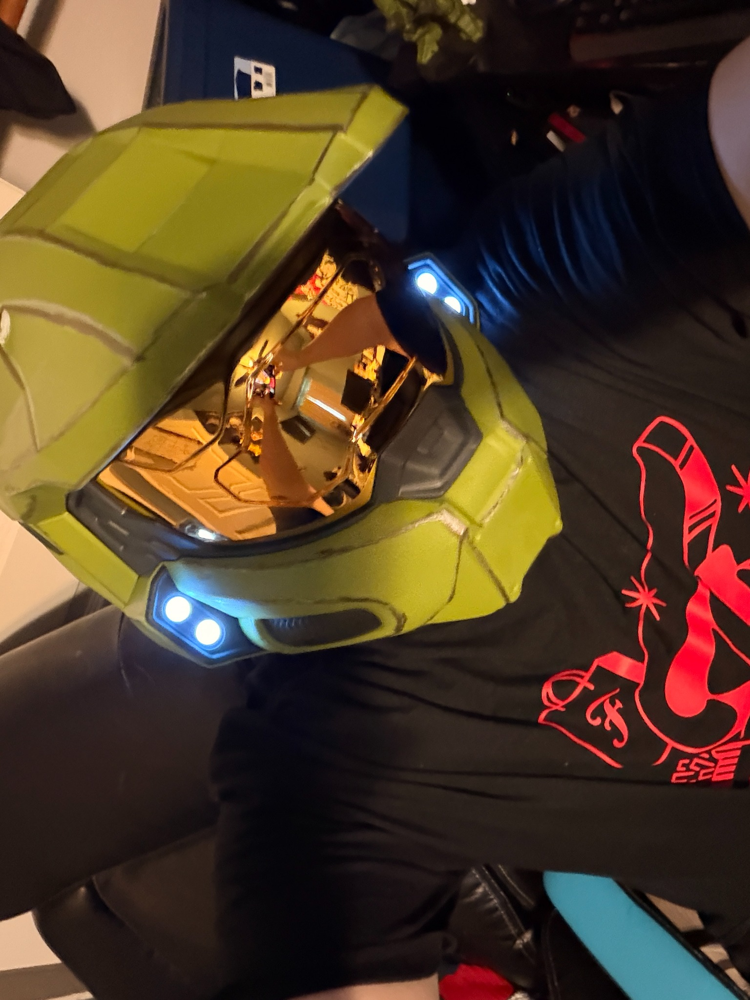

TRANSMISSION UNLOCKEDYou found the
117
You found the
hidden mission.
A little something for the people who look closer. You caught the robot, knew the number, and made it to my secret corner of the universe.
Halo is one of my favorite games. This page is a nod to that love—and to the curiosity that keeps me gaming, building, and exploring.
